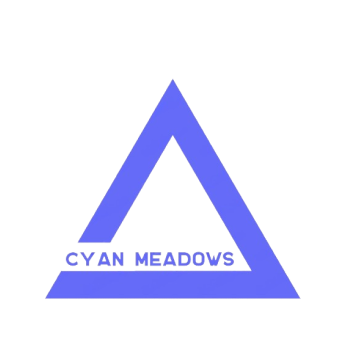
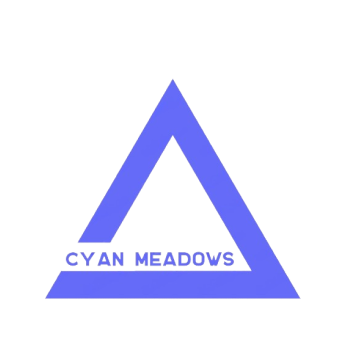

HOME
Doyen's IT Services include but are not limited to Discovery Informatics, Pre-Clinical, Clinical Trial, Data & Supplies Management, Clinical Safety, Regulatory Submissions, and Drug Portfolio Management.
Doyen Business Solutions enables healthcare organizations to create more efficient, effective, innovative and virtualized business models. We arm your enterprise with the strategic thinking to effectively respond no matter what direction the healthcare industry's evolution takes. Our deep industry expertise and experience across the healthcare ecosystem enables healthcare organizations to successfully address challenges and seize opportunities by improving processes, creating efficiencies and unlocking innovation. We serve the global pharmaceutical companies, medical device companies besides the health insurers and help them:1) Reduce the drug discovery and development cycle times
2) Manage, streamline, and integrate manufacturing and supply chain business processes within the organization
3) Automate and streamline compliance requirements
4) Enhance productivity of sales force
5) Improve ROI on marketing investments
Our R&D labs in Life Sciences Practice offer a wide range of innovative solutions for effectively managing drug discovery and development processes. Our objective is to enable and enhance the drug discovery and development cycle by improving productivity while reducing the cost and time-to-market through Life Sciences Consulting Services & Solutions.
SERVICES
ABOUT
CONTACT US
Health&LS